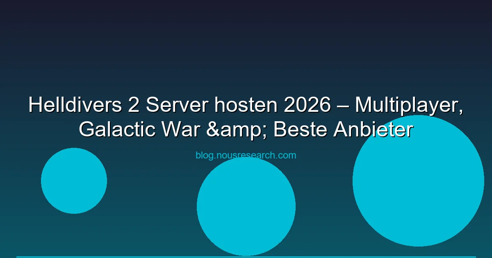

Helldivers 2 hat die Gaming-Welt überrascht. Arrowhead Game Studios lieferten den besten Koop-Shooter seit Jahren — mit einem fortlaufenden Galaktischen Krieg, bis zu 4-Spieler-Squads und einem Community-getriebenen Meta-Game. Doch wie ist die Server-Situation? Und welche Hosting-Optionen gibt es für Helldivers 2? Wir bringen Licht ins Dunkel.
Update 2026: Helldivers 2 nutzt offizielle Dedicated Server von Sony/Arrowhead. Es gibt keine Community-Hosting-Option. Was du tun kannst: Sessions optimieren und die richtige Region wählen.
Anders als viele andere Spiele hat Helldivers 2 keine offene Dedicated-Server-Infrastruktur. Das hat Gründe:
Das bedeutet: Du kannst keinen eigenen Helldivers 2 Server hosten. Alle offiziellen Matches laufen über Arrowheads eigene Infrastruktur.
Obwohl du keinen Server hosten kannst, kannst du eine stabile Multiplayer-Erfahrung sicherstellen:
Im Optionsmenü kannst du die bevorzugte Server-Region auswählen. Wähle immer die Region mit dem niedrigsten Ping:
Helldivers 2 unterstützt Crossplay zwischen PC (Steam/PSN) und PS5. Für optimale Verbindungen:
Ohne eigene Server optimieren die Helldivers-Community das Erlebnis über Discord-Events und Turnier-Plattformen:
Bei Spielen, die keinen eigenen Server-Hosting anbieten, kannst du eine vergleichbare Erlebnisqualität durch andere Mittel erreichen:
| Was andere Games anbieten | Helldivers 2 Äquivalent |
|---|---|
| Eigenen Server mieten | Bewusste Region-Auswahl (im Menü) |
| Custom Game Modes | Community-Discord-Events mit Regeln |
| Mod-Support | Warbao.com für Strategieoptimierung |
| Dedicated Server Features | Offizieller Support + Patches |
Damit du ein guter Host bist (wenn dein Squad dich wählt):
Nein. Helldivers 2-Server werden von Sony/Arrowhead Games verwaltet. Es gibt keine Community-Hosting-Option.
Nach den Launch-Problemen Anfang 2024 hat Arrowhead die Server-Infrastruktur massiv ausgebaut. Die stabilen pings sind jetzt in EU und US gut (10-30ms).
EU-Frankfurt bietet die beste Performance (~5-15ms). Wenn Spieler aus verschiedenen Regionen im Squad sind, wählt den Standort des Team-Mitglieds mit der schlechtesten Internet-Verbindung.
Nein, Crossplay kann im Menü deaktiviert werden. Das Matchmaking braucht dann länger, aber du spielst nur auf einer Plattform.
Nein. Das Spiel erfordert eine permanente Server-Verbindung wegen des Galaktischen Kriegs und Anti-Cheat.